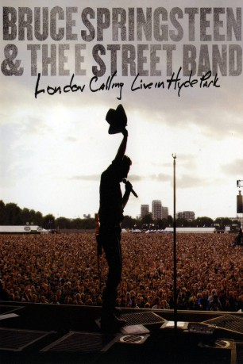

#4129 Bruce Springsteen and the E Street Band: London Calling - Live in Hyde Park
 
 IMDB-Wertung: 8.9 / 10
IMDB-Wertung: 8.9 / 10  Metascore: 0
Metascore: 0 
Captured in London at the Hard Rock Calling Festival on June 28, 2009 in HD, the 172-minute film documents 27 tracks of live Springsteen that begin in daylight and progress through a gorgeous sunset into night.
Jahr: 2010
Dauer: 172 Minuten
FSK:
Land: USA Studio: Tonspuren:
Untertitel:
Auflösung: 1080p (1920x1080) Größe: 9850 MB
Genre: Musik, Dokumentation
Regisseur: Chris Hilson
Drehbuch: Mark Monroe
Soundtrack:
Darsteller:
- Bruce Springsteen als Himself
- E Street Band als Themselves
Datei: X:\Musik\Bruce Springsteen and the E Street Band London Calling - Live in Hyde Park (2010, FSK, 1920x1080).mkv seit 26.07.2016
Festplatte: HD Serien(SU-Z)+Dokus+Musik
 Es gibt insgesamt 134 Filme in der Gruppe 'Musik'
Es gibt insgesamt 134 Filme in der Gruppe 'Musik'